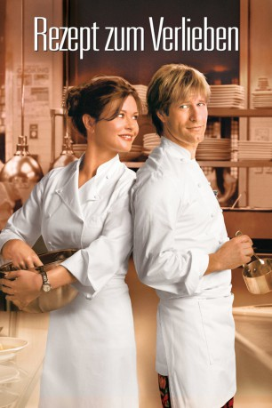
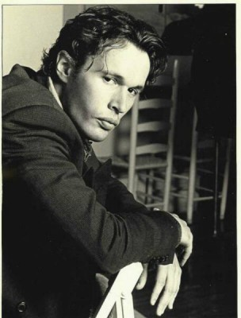

#5383 Rezept zum Verlieben
Alternativ: No Reservations
 
 IMDB-Wertung: 6.3 / 10
IMDB-Wertung: 6.3 / 10  Metascore: 0
Metascore: 0 
Ihnen gelüstet nach zarten, perfekt zubereiteten "Wachteln in Trüffelsauce"? Nichts leichter als das: So was zaubert Kate, die arbeitssüchtige Meisterköchin eines Edelrestaurants in Manhattan, mit links auf den Teller. Aber wie sie den neuen Sous-Chef, einen lockeren Typen, der Opern liebt, weichkochen soll, weiß sie nicht. Und den Umgang mit ihrer verwaisten Nichte, die bei ihr einzieht und die für Fischstäbchen jede Gänseleberpastete stehen lässt, kriegt sie auch nicht gebacken. "Ich wünschte, es gäbe ein Kochbuch fürs Leben mit exakten Verhaltensrezepten", seufzt Kate bei ihrem Therapeuten.
Jahr: 2007
Dauer: 104 Minuten
FSK: 0
Land: USA Studio: Warner Bros.Tonspuren: DD5.1 - ,
Untertitel: Englisch, Deutsch,
Auflösung: 1080p (1920x800) Größe: 9144 MB
Genre: Drama, Komödie, Liebe
Regisseur: Scott Hicks
Drehbuch: Alejandro Monteverde
Soundtrack:
Darsteller:
 Catherine Zeta-Jones als Kate
Catherine Zeta-Jones als Kate Aaron Eckhart als Nick
Aaron Eckhart als Nick Abigail Breslin als Zoe
Abigail Breslin als Zoe Patricia Clarkson als Paula
Patricia Clarkson als Paula Jenny Wade als Leah
Jenny Wade als Leah Bob Balaban als Therapist
Bob Balaban als Therapist Brían F. O'Byrne als Sean
Brían F. O'Byrne als Sean Lily Rabe als Bernadette
Lily Rabe als Bernadette- Eric Silver als John
- Arija Bareikis als Christine
 John McMartin als Mr. Peterson
John McMartin als Mr. Peterson Celia Weston als Mrs. Peterson
Celia Weston als Mrs. Peterson Zoë Kravitz als Charlotte
Zoë Kravitz als Charlotte Matthew Rauch als Ken
Matthew Rauch als Ken- Dearbhla Molloy als Anna
 Matt Servitto als Doctor
Matt Servitto als Doctor Fulvio Cecere als Fish Vendor Bob
Fulvio Cecere als Fish Vendor Bob- Ako als Vegetable Vendor
- Monica Trombetta als Liz
 Sam Kitchin als Mr. Mathews
Sam Kitchin als Mr. Mathews- Rob Leo Roy als Rare Steak Man
- Brian Luna als Sous Chef Applicant
- Roxanna Hope Radja als Sous Chef Applicant
 Katherine Sigismund als Ken's Wife
Katherine Sigismund als Ken's Wife- Patrick Zeller als Leah's Husband
- Gretchen Wiese als Mrs. Matthews
 Ramon Fernandez als Carlos
Ramon Fernandez als Carlos- Angel Rosa als Busboy
 Akira Takayama als Produce Customer
Akira Takayama als Produce Customer- John Borras als Construction Foreman , uncredited
- Philip Glass als Man at Bistro , uncredited
-  Chris Kerson als Man at the Bar , uncredited
- Stephanie Berry als School Principal Ellen Parker
- Yevgeniy Dekhtyar als Truffle Dealer
- Frank Santorelli als Lobster Vendor
- Arden Lewis als Line Cook Arden
- A.J. McCloud als Line Cook A.J.
- Mario Morales als Line Cook Mario
- David Wheir als Sous Chef Applicant
- Joey Cee als Sous Chef Applicant
- James Starace als Waiter
- Jeanne Omlor als Waitress
- Noah Petroski als Sean's Twin
- Nicholas Petroski als Sean's Twin
- Lorca Simons als Rare Steak Woman
- Ignacio Heredero als Busboy
- Albert Martinez als Busboy
- Hani Shihada als Chalk Artist
- Henry Kwan als Delivery Guy , uncredited
Datei: X:\2007(N-Z)\Rezept zum Verlieben (2007, FSK0, 1920x800).mkv seit 24.01.2017
Festplatte: HD 2007(A-Z)-2008(A-F)
 Es gibt insgesamt 56 Filme in der Gruppe '2007(N-Z)'
Es gibt insgesamt 56 Filme in der Gruppe '2007(N-Z)'